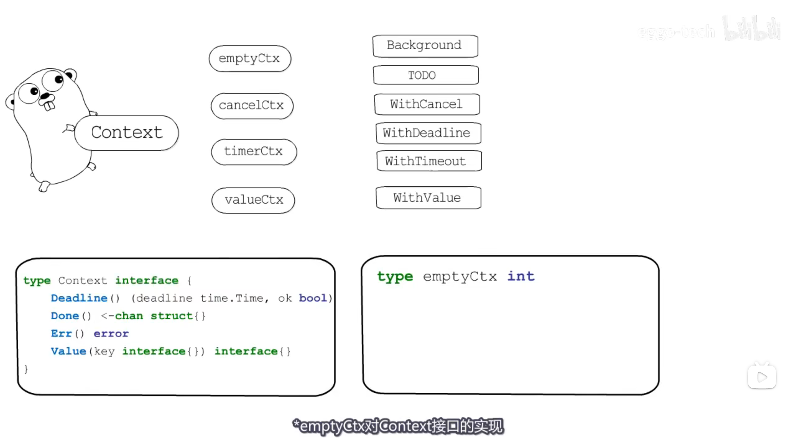
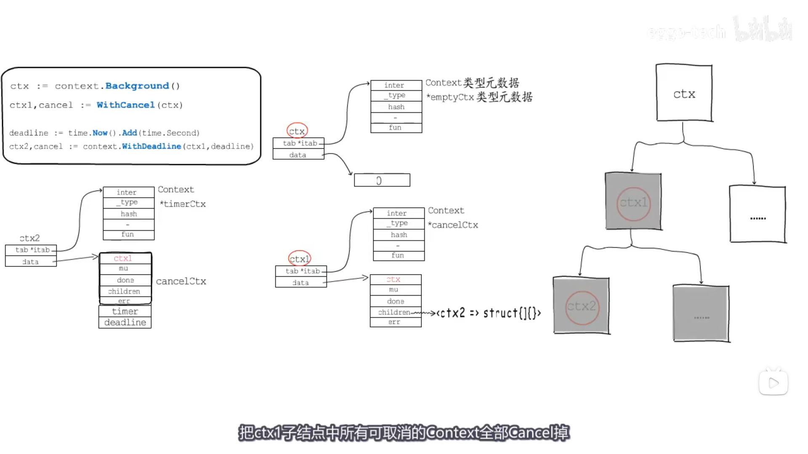
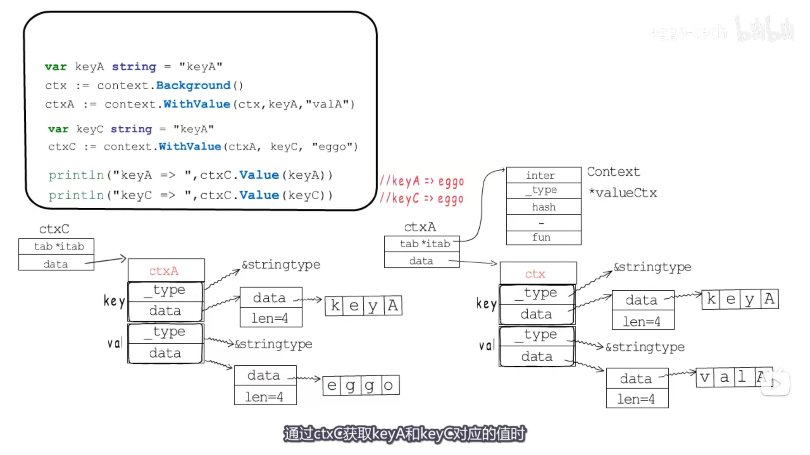
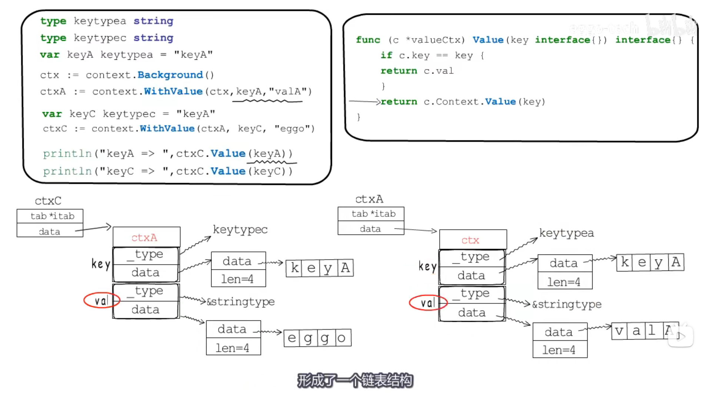
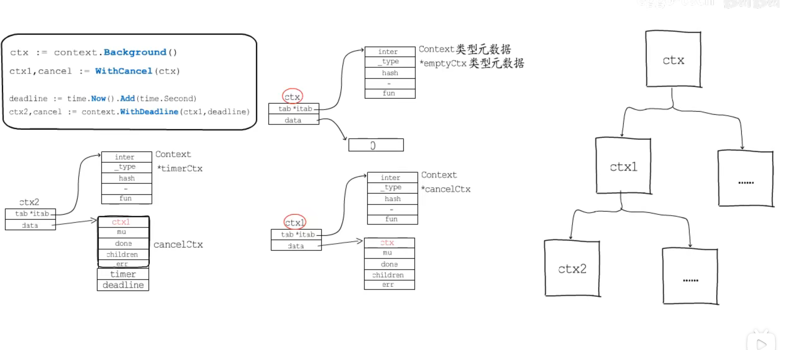

context
一个接口、四种具体实现、六个函数

|
|
Deadline返回绑定当前context的任务被取消的截止时间；如果没有设定期限，将返回ok == false。Done当绑定当前context的任务被取消时，将返回一个关闭的channel；如果当前context不会被取消，将返回nil。Err如果Done返回的channel没有关闭，将返回nil;如果Done返回的channel已经关闭，将返回非空的值表示任务结束的原因。如果是context被取消，Err将返回Canceled；如果是context超时，Err将返回DeadlineExceeded。Value返回context存储的键值对中当前key对应的值，如果没有对应的key,则返回nil

emptyCtx
emptyCtx是一个int类型的变量，但实现了context的接口。emptyCtx没有超时时间，不能取消，也不能存储任何额外信息，所以emptyCtx用来作为context树的根节点。
但我们一般不会直接使用emptyCtx，而是使用由emptyCtx实例化的两个变量，分别可以通过调用Background和TODO方法得到，但这两个context在实现上是一样的
Background和TODO只是用于不同场景下： Background通常被用于主函数、初始化以及测试中，作为一个顶层的context，也就是说一般我们创建的context都是基于Background；而TODO是在不确定使用什么context的时候才会使用。
valueCtx
|
|
valueCtx利用一个Context类型的变量来表示父节点context，所以当前context继承了父context的所有信息；valueCtx类型还携带一组键值对，也就是说这种context可以携带额外的信息。valueCtx实现了Value方法，用以在context链路上获取key对应的值，如果当前context上不存在需要的key,会沿着context链向上寻找key对应的值，直到根节点。
WithValue
WithValue用以向context添加键值对：
|
|
这里添加键值对不是在原context结构体上直接添加，而是以此context作为父节点，重新创建一个新的valueCtx子节点，将键值对添加在子节点上，由此形成一条context链。获取value的过程就是在这条context链上由尾部上前搜寻：

why？

cancelCtx
|
|
跟valueCtx类似，cancelCtx中也有一个context变量作为父节点；变量done表示一个channel，用来表示传递关闭信号；children表示一个map，存储了当前context节点下的子节点；err用于存储错误信息表示任务结束的原因。mu就是用来保护这几个字段的锁，以保障cancelCtx是线程安全的
WithCancel
WithCancel函数用来创建一个可取消的context，即cancelCtx类型的context。WithCancel返回一个context和一个CancelFunc，调用CancelFunc即可触发cancel操作
|
|
timerCtx
timerCtx是一种基于cancelCtx的context类型，从字面上就能看出，这是一种可以定时取消的context。
|
|
WithDeadline
WithDeadline返回一个基于parent的可取消的context，并且其过期时间deadline不晚于所设置时间d。
WithTimeout
与WithDeadline类似，WithTimeout也是创建一个定时取消的context，只不过WithDeadline是接收一个过期时间点，而WithTimeout接收一个相对当前时间的过期时长timeout
https://juejin.cn/post/7053781262690942990

总结
context主要用于父子任务之间的同步取消信号，本质上是一种协程调度的方式。另外在使用context时有两点值得注意：上游任务仅仅使用context通知下游任务不再需要，但不会直接干涉和中断下游任务的执行，由下游任务自行决定后续的处理操作，也就是说context的取消操作是无侵入的；context是线程安全的，因为context本身是不可变的（immutable），因此可以放心地在多个协程中传递使用。